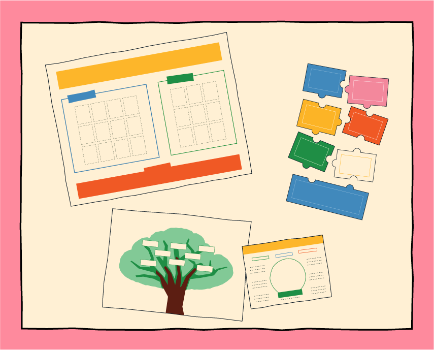
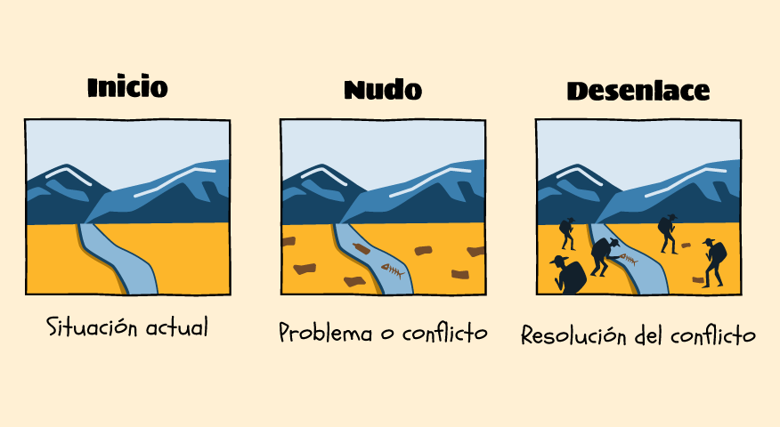
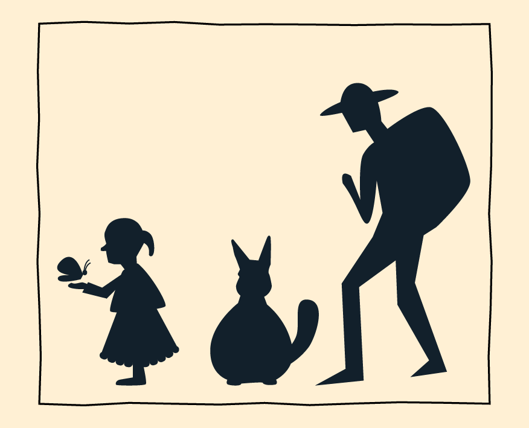
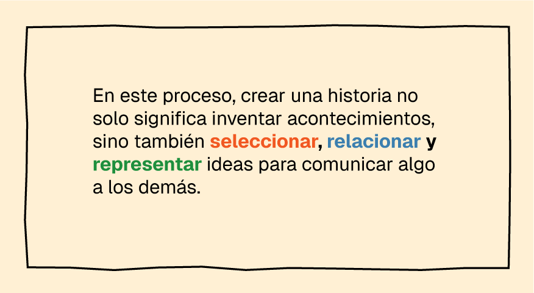

Guía

1. ¿Qué es este material?
Es una herramienta para profesores que permite trabajar diferentes temas y contenidos de una manera creativa y participativa. Propone actividades para que los estudiantes exploren un tema, creen personajes y construyan historias compartiendo sus ideas.
Dirigido a
Niños, niñas y adolescentes de 10 a 13 años de edad.
Tipo de actividades
Recomendado para grupos de 3 a 5 estudiantes.

2. ¿Qué es una historia y cómo se construye?
Una historia cuenta una serie de situaciones que les suceden a uno o varios personajes.
¿Qué es una narrativa?
La narrativa es la forma en que organizamos los acontecimientos para contar una historia.
¿Cómo se organiza?
Una historia se organiza en tres partes: inicio, nudo y desenlace.
Inicio: presenta una situación y a los personajes.
Nudo: presenta un problema o algo que cambia la situación.
Desenlace: muestra cómo se resuelve el problema y cómo termina la historia.


Personajes
Los personajes son quienes participan en la historia y realizan acciones que permiten que los acontecimientos ocurran, para construirlos se consideran aspectos como:
Nombre y características.
¿Cómo es?Apariencia, personalidad o cualidades.
¿Qué quiere?Deseos, objetivos o necesidades.
¿Qué puede hacer?Habilidades, conocimientos o poderes.
¿Qué siente?Emociones frente a la situación.

¿Qué nos permite hacer la narrativa?
La narrativa nos permite organizar y relacionar lo que sucede para comprenderlo, darle sentido y comunicarlo. Al construir una historia, podemos expresar ideas, experiencias y diferentes formas de ver nuestro entorno.

3. ¿Cómo se organiza el material didáctico?

Material físico
para estudiantes
- Tablero contextualizador
- Árbol de Ideas
- Fichas de personajes
- Rompecabezas para crear historias
Material digital
para educadores
- Guía para el docente
- Actividades paso a paso
- Recursos de apoyo
- Herramientas interactivas
Propuesta metodológica
La propuesta utiliza la participación, el diálogo, la exploración y la creación colectiva para desarrollar ideas y transformarlas en personajes e historias.
4. ¿Cómo trabajar con el material?
Actividad 1
Tablero
Objetivo:
Explorar un tema y generar ideas.
Material:Tablero contextualizador + fichas.
Producto:Dibujo colectivo.
Actividad
Personaje
Objetivo:
Transformar ideas en personajes.
Material:Árbol de Ideas + fichas de personajes.
Producto:Personajes dibujados y/o modelados.
Actividad
Historia
Objetivo:
Organizar personajes y acontecimientos para crear una historia.
Material:Rompecabezas narrativo.
Producto:Historia escrita, dibujada o combinada.
Nota: Las actividades pueden adaptarse a diferentes temas y contenidos curriculares.
5. Antes de comenzar
El profesor debe:
- Seleccionar el tema que se trabajará.
- Revisar la actividad y sus materiales.
- Preparar el espacio de trabajo.
- Organizar a los estudiantes en grupos.
- Tener disponible el material físico correspondiente.
- Revisar los recursos digitales que acompañan la actividad.
6. Rol del profesor
Durante las actividades
Pregunta
Plantea preguntas concretas para orientar la exploración
Escucha
Recoge las ideas de los estudiantes.
Organiza
Ayuda al grupo a ordenar y relacionar sus ideas.
Acompaña
Facilita acuerdos sin decidir por el grupo.
Anima a participar
Procura que todos tengan oportunidades de aportar.
7.¿Cómo utilizar el material digital?
El material digital acompaña al docente.
Antes
Consulta la guía.
Revisa la actividad.
Prepara los materiales.
Durante
Sigue los pasos
Consulta las preguntas de mediación.
Proyecta recursos cuando sea necesario.
Utiliza las herramientas interactivas.
Después
Facilita la socialización.
Recupera lo aprendido.
Puede utilizar los resultados para continuar con la siguiente
actividad.